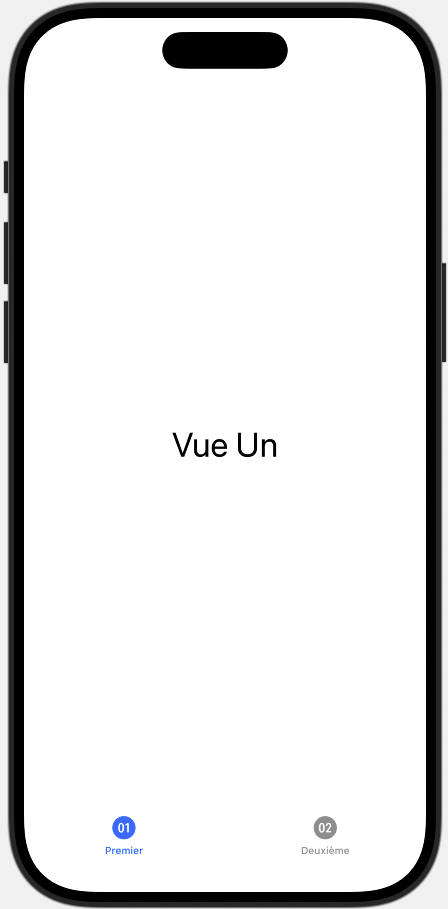

SwiftUI est un outil puissant qui simplifie la création d’interfaces utilisateur en gérant automatiquement le cycle de vie des vues. Cela signifie que certaines actions, comme la mise à jour de l’affichage ou la gestion des données, sont prises en charge sans que vous ayez à vous en soucier.
Cependant, il arrive que l’on ait besoin de déclencher certaines actions à des moments précis du cycle de vie d’une vue. Par exemple :
Pour cela, SwiftUI propose des modificateurs d’événements, qui permettent d’exécuter du code en fonction de l’état de la vue.
Dans ce chapitre, nous allons voir comment utiliser quatre des modificateurs d’événements les plus courants en créant un projet qui illustre leur fonctionnement. 🚀
Dans cette section, nous allons apprendre à structurer une application avec une interface utilisant des onglets grâce à TabView en SwiftUI. Cela permettra à l’utilisateur de naviguer facilement entre différentes vues.
Nous allons commencer par modifier le fichier ContentView.swift pour y intégrer une barre d’onglets contenant deux vues.
Étape 1 : Ouvrir ContentView.swift
Dans votre projet Xcode, ouvrez ContentView.swift, puis remplacez son contenu par le code
suivant :
import SwiftUI
struct ContentView: View {
var body: some View {
TabView {
FirstTabView()
.tabItem {
Image(systemName: "01.circle")
Text("Premier")
}
SecondTabView()
.tabItem {
Image(systemName: "02.circle")
Text("Deuxième")
}
}
}
}
✅ Ici, nous utilisons TabView pour afficher deux vues :
FirstTabView() : La première vue avec une icône et un texte “Premier”.SecondTabView() : La deuxième vue avec une icône et un texte “Deuxième”.Les modificateurs .tabItem permettent d’ajouter une icône et un texte pour identifier chaque
onglet.
Nous allons maintenant créer les fichiers nécessaires pour ces deux vues.
Étape 2 : Créer la première vue (FirstTabView)
FirstTabView.swift, puis cliquez sur Créer.
import SwiftUI
struct FirstTabView: View {
var body: some View {
Text("Vue Un")
.font(.largeTitle)
.padding()
}
}
Étape 3 : Créer la deuxième vue (SecondTabView)
FirstTabView, mais cette fois-ci, nommez le
fichier SecondTabView.swift.
import SwiftUI
struct SecondTabView: View {
var body: some View {
Text("Vue Deux")
.font(.largeTitle)
.padding()
}
}
Lancez l’aperçu dans Xcode en cliquant sur Resume ou en exécutant l’application avec Cmd + R. Vous devriez voir une interface avec deux onglets permettant de naviguer entre “Vue Un” et “Vue Deux”.
Pour une démonstration en vidéo, regardez la vidéo suivante :
SwiftUI nous permet de réagir aux changements d’affichage des vues grâce aux modificateurs
onAppear() et onDisappear().
onAppear : Exécute une action lorsque la vue apparaît à
l’écran.onDisappear : Exécute une action lorsque la vue disparaît de
l’écran.Ces modificateurs sont très utiles pour :
Nous allons maintenant les intégrer dans FirstTabView.swift pour observer leur
fonctionnement.
Étape 1 : Modifier FirstTabView.swift
Ouvrez le fichier FirstTabView.swift et remplacez son contenu par :
import SwiftUI
struct FirstTabView: View {
var body: some View {
Text("Vue Un")
.font(.largeTitle)
.padding()
.onAppear {
print("🔵 FirstTabView est apparu")
}
.onDisappear {
print("🔴 FirstTabView a disparu")
}
}
}
Étape 2 : Lancer l’application
Étape 3 : Changer d’onglet
SecondTabView.FirstTabView est affiché →
onAppear est déclenché.
FirstTabView disparaît →
onDisappear est
déclenché.
onAppear est à
nouveau exécuté.Le modificateur onChange(of:) permet d’exécuter une action dès qu’une valeur spécifique
change. C’est particulièrement utile lorsque vous souhaitez réagir aux modifications d’un état dans
votre application.
@State et exécuter une action en
conséquence.ScenePhase (utilisée pour détecter si
l’application passe en arrière-plan ou revient au premier plan).Nous allons modifier le fichier SecondTabView.swift pour observer le fonctionnement de
onChange lorsqu’un utilisateur tape dans un champ de texte.
Pour une démonstration en vidéo, regardez la vidéo suivante :
Étape 1 : Modifier SecondTabView.swift
Remplacez le contenu du fichier par le code suivant :
import SwiftUI
struct SecondTabView: View {
@State private var text: String = ""
var body: some View {
VStack {
Text("Tapez quelque chose :")
.font(.headline)
TextEditor(text: $text)
.frame(height: 150)
.border(Color.gray, width: 1)
.padding()
.onChange(of: text) { newValue in
print("🔄 Texte modifié : \(newValue)")
}
}
.padding()
}
}
#Preview {
SecondTabView()
}
Étape 2 : Lancer l’application
Étape 3 : Observer les résultats
🔄 Texte modifié : [nouvelle valeur du texte]
@State private var text: String = "" est un état qui stocke le texte saisi.
TextEditor(text: $text) permet à l’utilisateur de modifier cette variable.onChange(of: text) surveille text et exécute du code
chaque fois qu’il change.Pour une démonstration en vidéo, regardez la vidéo suivante :
Dans ce chapitre, nous allons apprendre à utiliser des objets observables et des objets d’environnement dans SwiftUI. Ces objets sont très utiles pour gérer des données qui changent au cours du temps, comme un compteur qui s’incrémente chaque seconde.
Un objet observable est une sorte de “boîte” où nous stockons des données que nous voulons suivre (observer). Dès que ces données changent, SwiftUI met à jour automatiquement les vues qui utilisent ces données. Par exemple, nous allons créer un objet qui utilise un Timer pour incrémenter un compteur chaque seconde.
Commencez par créer une nouvelle classe pour notre objet observable. Cette classe gérera un compteur et mettra à jour cette valeur chaque seconde à l’aide d’un Timer.
Voici à quoi cela pourrait ressembler dans un fichier nommé TimerData.swift :
import Foundation
@Observable
class TimerData {
var timeCount = 0
init() {
// Créer un timer qui se déclenche toutes les secondes
Timer.scheduledTimer(
withTimeInterval: 1.0, repeats: true) { _ in
self.update() // Appel de la fonction update chaque seconde
}
}
// Met à jour le compteur
func update() {
timeCount += 1
}
// Réinitialise le compteur
func resetCount() {
timeCount = 0
}
}
Ici, chaque fois que le Timer se déclenche, il appelle la fonction update() qui incrémente le compteur.
Maintenant que nous avons notre objet observable, nous allons créer une vue qui affichera ce compteur.
ContentView.swift.Voici comment vous pouvez écrire cette vue :
import SwiftUI
struct ContentView: View {
var timerData: TimerData = TimerData()
var body: some View {
NavigationStack {
VStack {
Text("Compte à rebours = \(timerData.timeCount)")
.font(.largeTitle)
.fontWeight(.bold)
.padding()
Button(action: resetCount) {
Text("Réinitialiser le compteur")
}
}
}
}
func resetCount() {
timerData.resetCount() // Appel pour réinitialiser le compteur
}
}
#Preview {
ContentView()
}
Quand vous exécutez cette vue, vous verrez le compteur s’incrémenter chaque seconde, et vous pourrez le réinitialiser en appuyant sur le bouton.
Maintenant, nous allons ajouter une deuxième vue (SecondView) qui affichera également le même compteur. Nous voulons nous assurer que la valeur du compteur est partagée entre les vues.
SecondView.swift.Voici à quoi cela pourrait ressembler :
import SwiftUI
struct SecondView: View {
var timerData: TimerData
var body: some View {
VStack {
Text("Deuxième Vue")
.font(.largeTitle)
Text("Compteur de Timer = \(timerData.timeCount)")
.font(.headline)
}
.padding()
}
}
#Aperçu {
SecondView(timerData: TimerData())
}
Pour naviguer de la ContentView à la SecondView, nous devons ajouter un bouton de navigation.
Voici comment vous pouvez ajouter un NavigationLink dans ContentView pour naviguer vers SecondView :
var body: some View {
NavigationStack {
VStack {
Text("Compteur de timer = \(timerData.timeCount)")
.font(.largeTitle)
.fontWeight(.bold)
.padding()
Button(action: resetCount) {
Text("Réinitialiser le compteur")
}
// Lien pour aller à la deuxième vue
NavigationLink(destination: SecondView(timerData: timerData)) {
Text("Écran Suivant")
}
.padding()
}
}
}
Quand vous appuyez sur le bouton “Écran Suivant”, l’application va naviguer vers la deuxième vue et afficher le même compteur.
Au lieu de passer l’objet TimerData manuellement entre les vues, nous allons utiliser un objet d’environnement. Cela permet de partager facilement des données entre différentes vues sans avoir à les transmettre explicitement.
ContentView.swift pour inclure l’objet TimerData dans
l’environnement :
import SwiftUI
struct ContentView: View {
var timerData: TimerData = TimerData()
var body: some View {
NavigationStack {
VStack {
NavigationLink(destination: SecondView()) {
Text("Écran Suivant")
}
.padding()
}
}
.environment(timerData) // Ajout de l'objet TimerData à l'environnement
}
}
#Preview {
ContentView()
}
import SwiftUI
struct SecondView: View {
@Environment(TimerData.self) var timerData // Accès à l'objet TimerData via l'environnement
var body: some View {
VStack {
Text("Deuxième Vue")
.font(.largeTitle)
Text("Compteur de Timer = \(timerData.timeCount)")
.font(.headline)
}
.padding()
}
}
#Preview {
SecondView()
}
Maintenant, les deux vues utilisent le même objet TimerData grâce à l’environnement. Il n’est plus nécessaire de le passer manuellement d’une vue à l’autre.
Dans ce chapitre, vous avez appris à :
Cela vous permet de créer des applications plus flexibles et plus simples à maintenir, car vous pouvez partager des données entre différentes parties de l’application sans avoir à vous soucier de leur transmission manuelle.